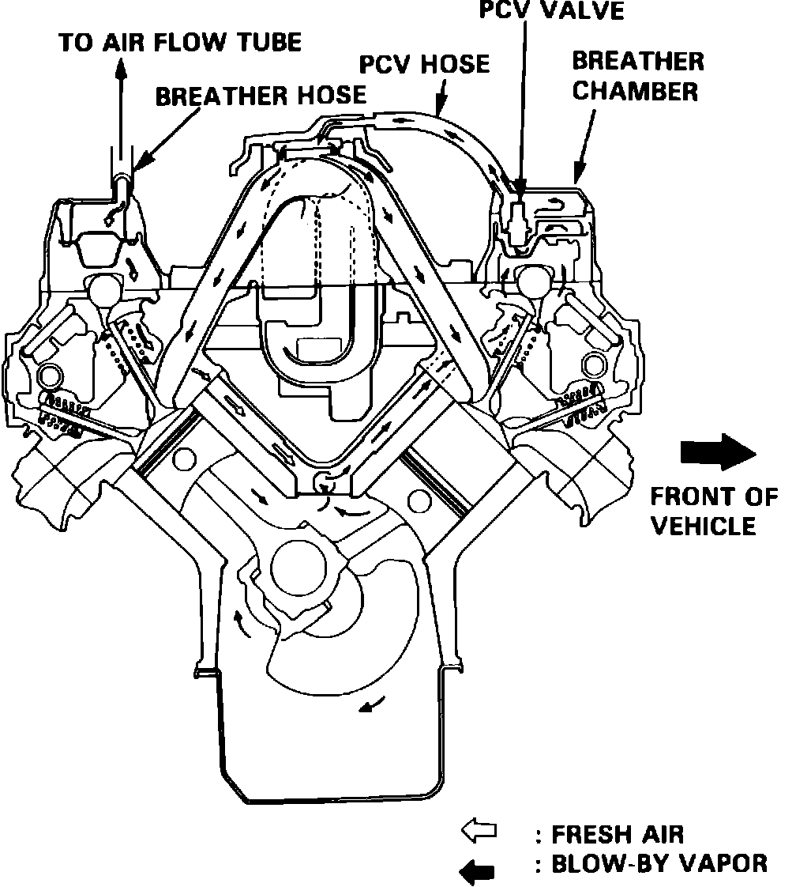
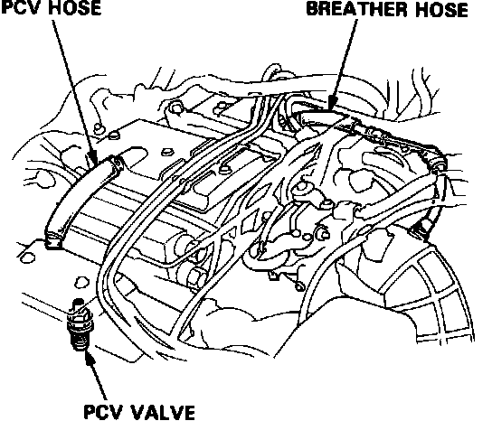

Positive Crankcase Ventilation: Testing and Inspection
Fig. 1 PCV System:

Fig. 36 Checking PCV System:

1. Check the crankcase ventilation hoses and connections for leaks and clogging.
2. Start the engine and while idling, pinch and release the PCV hose and check for a clicking sound.
3. If no clicking sound is heard, replace the PCV valve and recheck.